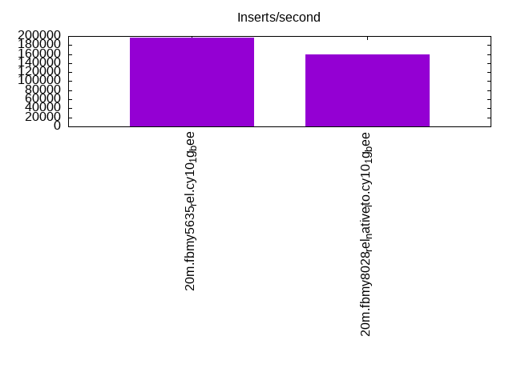

This is a report for the insert benchmark with 20M docs and 4 client(s). It is generated by scripts (bash, awk, sed) and Tufte might not be impressed. An overview of the insert benchmark is here and a short update is here. Below, by DBMS, I mean DBMS+version.config. An example is my8020.c10b40 where my means MySQL, 8020 is version 8.0.20 and c10b40 is the name for the configuration file.
The test server has 8 AMD cores, 16G RAM and an NVMe SSD. It is described here as the Beelink. The benchmark was run with 4 clients and there were 1 or 3 connections per client (1 for queries or inserts without rate limits, 1+1 for rate limited inserts+deletes). It uses 4 tables, 1 per client. It loads 20M rows per table without secondary indexes, creates secondary indexes, then inserts 50M rows per table with a delete per insert to avoid growing the table. It then does 3 read+write tests for 1800s each that do queries as fast as possible with 100, 500 and then 1000 inserts/second/client concurrent with the queries and 1000 deletes/second to avoid growing the table. The database is cached by the OS page cache but not by the storage engine. Clients and the DBMS share one server. The per-database configs are in the per-database subdirectories here.
The tested DBMS are:
The numbers are inserts/s for l.i0 and l.i1, indexed docs (or rows) /s for l.x and queries/s for q*.2. The values are the average rate over the entire test for inserts (IPS) and queries (QPS). The range of values for IPS and QPS is split into 3 parts: bottom 25%, middle 50%, top 25%. Values in the bottom 25% have a red background, values in the top 25% have a green background and values in the middle have no color. A gray background is used for values that can be ignored because the DBMS did not sustain the target insert rate. Red backgrounds are not used when the minimum value is within 80% of the max value.
| dbms | l.i0 | l.x | l.i1 | q100.1 | q500.1 | q1000.1 |
|---|---|---|---|---|---|---|
| 20m.fbmy5635_rel.cy10_1g_bee | 196078 | 300000 | 39544 | 11338 | 11080 | 11351 |
| 20m.fbmy8028_rel_native_lto.cy10_1g_bee | 160000 | 283098 | 40310 | 10808 | 10730 | 10346 |
This table has relative throughput, throughput for the DBMS relative to the DBMS in the first line, using the absolute throughput from the previous table.
| dbms | l.i0 | l.x | l.i1 | q100.1 | q500.1 | q1000.1 |
|---|---|---|---|---|---|---|
| 20m.fbmy5635_rel.cy10_1g_bee | 1.00 | 1.00 | 1.00 | 1.00 | 1.00 | 1.00 |
| 20m.fbmy8028_rel_native_lto.cy10_1g_bee | 0.82 | 0.94 | 1.02 | 0.95 | 0.97 | 0.91 |
This lists the average rate of inserts/s for the tests that do inserts concurrent with queries. For such tests the query rate is listed in the table above. The read+write tests are setup so that the insert rate should match the target rate every second. Cells that are not at least 95% of the target have a red background to indicate a failure to satisfy the target.
| dbms | q100.1 | q500.1 | q1000.1 |
|---|---|---|---|
| fbmy5635_rel.cy10_1g_bee | 398 | 1993 | 3987 |
| fbmy8028_rel_native_lto.cy10_1g_bee | 398 | 1993 | 3989 |
| target | 400 | 2000 | 4000 |
l.i0: load without secondary indexes. Graphs for performance per 1-second interval are here.
Average throughput:
Insert response time histogram: each cell has the percentage of responses that take <= the time in the header and max is the max response time in seconds. For the max column values in the top 25% of the range have a red background and in the bottom 25% of the range have a green background. The red background is not used when the min value is within 80% of the max value.
| dbms | 256us | 1ms | 4ms | 16ms | 64ms | 256ms | 1s | 4s | 16s | gt | max |
|---|---|---|---|---|---|---|---|---|---|---|---|
| fbmy5635_rel.cy10_1g_bee | 99.770 | 0.213 | 0.003 | 0.013 | 0.102 | ||||||
| fbmy8028_rel_native_lto.cy10_1g_bee | 99.319 | 0.487 | 0.182 | 0.013 | 0.115 |
Performance metrics for the DBMS listed above. Some are normalized by throughput, others are not. Legend for results is here.
ips qps rps rmbps wps wmbps rpq rkbpq wpi wkbpi csps cpups cspq cpupq dbgb1 dbgb2 rss maxop p50 p99 tag 196078 0 0 0.0 121.4 51.5 0.000 0.000 0.001 0.269 20184 71.3 0.103 29 0.9 2.0 0.4 0.102 55160 43153 20m.fbmy5635_rel.cy10_1g_bee 160000 0 0 0.0 111.6 44.3 0.000 0.000 0.001 0.284 16215 65.8 0.101 33 0.7 1.9 0.8 0.115 42853 6495 20m.fbmy8028_rel_native_lto.cy10_1g_bee
l.x: create secondary indexes.
Average throughput:
Performance metrics for the DBMS listed above. Some are normalized by throughput, others are not. Legend for results is here.
ips qps rps rmbps wps wmbps rpq rkbpq wpi wkbpi csps cpups cspq cpupq dbgb1 dbgb2 rss maxop p50 p99 tag 300000 0 1 0.0 131.9 55.9 0.000 0.000 0.000 0.191 583 47.1 0.002 13 1.4 2.4 1.6 0.003 NA NA 20m.fbmy5635_rel.cy10_1g_bee 283098 0 1 0.0 114.8 47.4 0.000 0.000 0.000 0.171 761 45.6 0.003 13 1.4 2.7 2.2 0.013 NA NA 20m.fbmy8028_rel_native_lto.cy10_1g_bee
l.i1: continue load after secondary indexes created. Graphs for performance per 1-second interval are here.
Average throughput:
Insert response time histogram: each cell has the percentage of responses that take <= the time in the header and max is the max response time in seconds. For the max column values in the top 25% of the range have a red background and in the bottom 25% of the range have a green background. The red background is not used when the min value is within 80% of the max value.
| dbms | 256us | 1ms | 4ms | 16ms | 64ms | 256ms | 1s | 4s | 16s | gt | max |
|---|---|---|---|---|---|---|---|---|---|---|---|
| fbmy5635_rel.cy10_1g_bee | 21.635 | 78.332 | 0.028 | 0.005 | 0.117 | ||||||
| fbmy8028_rel_native_lto.cy10_1g_bee | 26.457 | 73.301 | 0.231 | 0.012 | 0.142 |
Delete response time histogram: each cell has the percentage of responses that take <= the time in the header and max is the max response time in seconds. For the max column values in the top 25% of the range have a red background and in the bottom 25% of the range have a green background. The red background is not used when the min value is within 80% of the max value.
| dbms | 256us | 1ms | 4ms | 16ms | 64ms | 256ms | 1s | 4s | 16s | gt | max |
|---|---|---|---|---|---|---|---|---|---|---|---|
| fbmy5635_rel.cy10_1g_bee | 20.864 | 79.101 | 0.030 | 0.005 | 0.162 | ||||||
| fbmy8028_rel_native_lto.cy10_1g_bee | 27.113 | 72.643 | 0.231 | 0.013 | 0.155 |
Performance metrics for the DBMS listed above. Some are normalized by throughput, others are not. Legend for results is here.
ips qps rps rmbps wps wmbps rpq rkbpq wpi wkbpi csps cpups cspq cpupq dbgb1 dbgb2 rss maxop p50 p99 tag 39544 0 14 0.7 143.7 58.2 0.000 0.018 0.004 1.506 18421 68.1 0.466 138 3.7 3.9 1.5 0.117 9939 8890 20m.fbmy5635_rel.cy10_1g_bee 40310 0 28 0.8 154.3 58.9 0.001 0.020 0.004 1.496 16538 72.1 0.410 143 5.3 5.8 1.9 0.142 10189 8940 20m.fbmy8028_rel_native_lto.cy10_1g_bee
q100.1: range queries with 100 insert/s per client. Graphs for performance per 1-second interval are here.
Average throughput:
Query response time histogram: each cell has the percentage of responses that take <= the time in the header and max is the max response time in seconds. For max values in the top 25% of the range have a red background and in the bottom 25% of the range have a green background. The red background is not used when the min value is within 80% of the max value.
| dbms | 256us | 1ms | 4ms | 16ms | 64ms | 256ms | 1s | 4s | 16s | gt | max |
|---|---|---|---|---|---|---|---|---|---|---|---|
| fbmy5635_rel.cy10_1g_bee | 17.471 | 82.514 | 0.014 | nonzero | 0.011 | ||||||
| fbmy8028_rel_native_lto.cy10_1g_bee | 13.550 | 86.427 | 0.023 | 0.001 | nonzero | 0.018 |
Insert response time histogram: each cell has the percentage of responses that take <= the time in the header and max is the max response time in seconds. For max values in the top 25% of the range have a red background and in the bottom 25% of the range have a green background. The red background is not used when the min value is within 80% of the max value.
| dbms | 256us | 1ms | 4ms | 16ms | 64ms | 256ms | 1s | 4s | 16s | gt | max |
|---|---|---|---|---|---|---|---|---|---|---|---|
| fbmy5635_rel.cy10_1g_bee | 98.958 | 1.028 | 0.014 | 0.018 | |||||||
| fbmy8028_rel_native_lto.cy10_1g_bee | 98.549 | 1.361 | 0.090 | 0.029 |
Delete response time histogram: each cell has the percentage of responses that take <= the time in the header and max is the max response time in seconds. For max values in the top 25% of the range have a red background and in the bottom 25% of the range have a green background. The red background is not used when the min value is within 80% of the max value.
| dbms | 256us | 1ms | 4ms | 16ms | 64ms | 256ms | 1s | 4s | 16s | gt | max |
|---|---|---|---|---|---|---|---|---|---|---|---|
| fbmy5635_rel.cy10_1g_bee | 98.889 | 1.097 | 0.014 | 0.023 | |||||||
| fbmy8028_rel_native_lto.cy10_1g_bee | 98.667 | 1.236 | 0.097 | 0.033 |
Performance metrics for the DBMS listed above. Some are normalized by throughput, others are not. Legend for results is here.
ips qps rps rmbps wps wmbps rpq rkbpq wpi wkbpi csps cpups cspq cpupq dbgb1 dbgb2 rss maxop p50 p99 tag 398 11338 2 0.2 7.6 1.7 0.000 0.019 0.019 4.444 42819 50.3 3.777 355 1.6 2.0 1.5 0.011 2797 2399 20m.fbmy5635_rel.cy10_1g_bee 398 10808 2 0.3 8.2 1.7 0.000 0.026 0.021 4.506 41042 50.9 3.798 377 1.6 2.2 1.8 0.018 2717 2206 20m.fbmy8028_rel_native_lto.cy10_1g_bee
q500.1: range queries with 500 insert/s per client. Graphs for performance per 1-second interval are here.
Average throughput:
Query response time histogram: each cell has the percentage of responses that take <= the time in the header and max is the max response time in seconds. For max values in the top 25% of the range have a red background and in the bottom 25% of the range have a green background. The red background is not used when the min value is within 80% of the max value.
| dbms | 256us | 1ms | 4ms | 16ms | 64ms | 256ms | 1s | 4s | 16s | gt | max |
|---|---|---|---|---|---|---|---|---|---|---|---|
| fbmy5635_rel.cy10_1g_bee | 14.731 | 85.207 | 0.058 | 0.004 | nonzero | 0.017 | |||||
| fbmy8028_rel_native_lto.cy10_1g_bee | 10.695 | 89.207 | 0.091 | 0.008 | nonzero | 0.028 |
Insert response time histogram: each cell has the percentage of responses that take <= the time in the header and max is the max response time in seconds. For max values in the top 25% of the range have a red background and in the bottom 25% of the range have a green background. The red background is not used when the min value is within 80% of the max value.
| dbms | 256us | 1ms | 4ms | 16ms | 64ms | 256ms | 1s | 4s | 16s | gt | max |
|---|---|---|---|---|---|---|---|---|---|---|---|
| fbmy5635_rel.cy10_1g_bee | 91.464 | 8.506 | 0.031 | 0.051 | |||||||
| fbmy8028_rel_native_lto.cy10_1g_bee | 79.024 | 20.767 | 0.208 | 0.001 | 0.070 |
Delete response time histogram: each cell has the percentage of responses that take <= the time in the header and max is the max response time in seconds. For max values in the top 25% of the range have a red background and in the bottom 25% of the range have a green background. The red background is not used when the min value is within 80% of the max value.
| dbms | 256us | 1ms | 4ms | 16ms | 64ms | 256ms | 1s | 4s | 16s | gt | max |
|---|---|---|---|---|---|---|---|---|---|---|---|
| fbmy5635_rel.cy10_1g_bee | 92.763 | 7.200 | 0.037 | 0.056 | |||||||
| fbmy8028_rel_native_lto.cy10_1g_bee | 82.014 | 17.786 | 0.200 | 0.063 |
Performance metrics for the DBMS listed above. Some are normalized by throughput, others are not. Legend for results is here.
ips qps rps rmbps wps wmbps rpq rkbpq wpi wkbpi csps cpups cspq cpupq dbgb1 dbgb2 rss maxop p50 p99 tag 1993 11080 0 0.0 11.7 3.7 0.000 0.000 0.006 1.896 41197 52.1 3.718 376 1.6 2.8 1.5 0.017 2750 2429 20m.fbmy5635_rel.cy10_1g_bee 1993 10730 0 0.0 12.6 3.7 0.000 0.000 0.006 1.905 40170 52.7 3.744 393 1.6 3.0 1.9 0.028 2702 2254 20m.fbmy8028_rel_native_lto.cy10_1g_bee
q1000.1: range queries with 1000 insert/s per client. Graphs for performance per 1-second interval are here.
Average throughput:
Query response time histogram: each cell has the percentage of responses that take <= the time in the header and max is the max response time in seconds. For max values in the top 25% of the range have a red background and in the bottom 25% of the range have a green background. The red background is not used when the min value is within 80% of the max value.
| dbms | 256us | 1ms | 4ms | 16ms | 64ms | 256ms | 1s | 4s | 16s | gt | max |
|---|---|---|---|---|---|---|---|---|---|---|---|
| fbmy5635_rel.cy10_1g_bee | 15.602 | 84.254 | 0.138 | 0.007 | nonzero | 0.030 | |||||
| fbmy8028_rel_native_lto.cy10_1g_bee | 6.980 | 92.748 | 0.256 | 0.016 | nonzero | 0.023 |
Insert response time histogram: each cell has the percentage of responses that take <= the time in the header and max is the max response time in seconds. For max values in the top 25% of the range have a red background and in the bottom 25% of the range have a green background. The red background is not used when the min value is within 80% of the max value.
| dbms | 256us | 1ms | 4ms | 16ms | 64ms | 256ms | 1s | 4s | 16s | gt | max |
|---|---|---|---|---|---|---|---|---|---|---|---|
| fbmy5635_rel.cy10_1g_bee | 93.183 | 6.799 | 0.018 | 0.052 | |||||||
| fbmy8028_rel_native_lto.cy10_1g_bee | 59.524 | 40.065 | 0.410 | 0.001 | 0.072 |
Delete response time histogram: each cell has the percentage of responses that take <= the time in the header and max is the max response time in seconds. For max values in the top 25% of the range have a red background and in the bottom 25% of the range have a green background. The red background is not used when the min value is within 80% of the max value.
| dbms | 256us | 1ms | 4ms | 16ms | 64ms | 256ms | 1s | 4s | 16s | gt | max |
|---|---|---|---|---|---|---|---|---|---|---|---|
| fbmy5635_rel.cy10_1g_bee | 93.751 | 6.226 | 0.023 | 0.053 | |||||||
| fbmy8028_rel_native_lto.cy10_1g_bee | 63.201 | 36.403 | 0.393 | 0.002 | 0.069 |
Performance metrics for the DBMS listed above. Some are normalized by throughput, others are not. Legend for results is here.
ips qps rps rmbps wps wmbps rpq rkbpq wpi wkbpi csps cpups cspq cpupq dbgb1 dbgb2 rss maxop p50 p99 tag 3987 11351 0 0.0 21.4 7.5 0.000 0.000 0.005 1.930 41198 55.2 3.629 389 1.7 2.4 1.5 0.030 2829 2493 20m.fbmy5635_rel.cy10_1g_bee 3989 10346 0 0.0 22.5 7.5 0.000 0.000 0.006 1.934 37893 55.7 3.662 431 1.7 2.6 1.9 0.023 2605 2175 20m.fbmy8028_rel_native_lto.cy10_1g_bee
l.i0: load without secondary indexes
Performance metrics for all DBMS, not just the ones listed above. Some are normalized by throughput, others are not. Legend for results is here.
ips qps rps rmbps wps wmbps rpq rkbpq wpi wkbpi csps cpups cspq cpupq dbgb1 dbgb2 rss maxop p50 p99 tag 196078 0 0 0.0 121.4 51.5 0.000 0.000 0.001 0.269 20184 71.3 0.103 29 0.9 2.0 0.4 0.102 55160 43153 20m.fbmy5635_rel.cy10_1g_bee 160000 0 0 0.0 111.6 44.3 0.000 0.000 0.001 0.284 16215 65.8 0.101 33 0.7 1.9 0.8 0.115 42853 6495 20m.fbmy8028_rel_native_lto.cy10_1g_bee
l.x: create secondary indexes
Performance metrics for all DBMS, not just the ones listed above. Some are normalized by throughput, others are not. Legend for results is here.
ips qps rps rmbps wps wmbps rpq rkbpq wpi wkbpi csps cpups cspq cpupq dbgb1 dbgb2 rss maxop p50 p99 tag 300000 0 1 0.0 131.9 55.9 0.000 0.000 0.000 0.191 583 47.1 0.002 13 1.4 2.4 1.6 0.003 NA NA 20m.fbmy5635_rel.cy10_1g_bee 283098 0 1 0.0 114.8 47.4 0.000 0.000 0.000 0.171 761 45.6 0.003 13 1.4 2.7 2.2 0.013 NA NA 20m.fbmy8028_rel_native_lto.cy10_1g_bee
l.i1: continue load after secondary indexes created
Performance metrics for all DBMS, not just the ones listed above. Some are normalized by throughput, others are not. Legend for results is here.
ips qps rps rmbps wps wmbps rpq rkbpq wpi wkbpi csps cpups cspq cpupq dbgb1 dbgb2 rss maxop p50 p99 tag 39544 0 14 0.7 143.7 58.2 0.000 0.018 0.004 1.506 18421 68.1 0.466 138 3.7 3.9 1.5 0.117 9939 8890 20m.fbmy5635_rel.cy10_1g_bee 40310 0 28 0.8 154.3 58.9 0.001 0.020 0.004 1.496 16538 72.1 0.410 143 5.3 5.8 1.9 0.142 10189 8940 20m.fbmy8028_rel_native_lto.cy10_1g_bee
q100.1: range queries with 100 insert/s per client
Performance metrics for all DBMS, not just the ones listed above. Some are normalized by throughput, others are not. Legend for results is here.
ips qps rps rmbps wps wmbps rpq rkbpq wpi wkbpi csps cpups cspq cpupq dbgb1 dbgb2 rss maxop p50 p99 tag 398 11338 2 0.2 7.6 1.7 0.000 0.019 0.019 4.444 42819 50.3 3.777 355 1.6 2.0 1.5 0.011 2797 2399 20m.fbmy5635_rel.cy10_1g_bee 398 10808 2 0.3 8.2 1.7 0.000 0.026 0.021 4.506 41042 50.9 3.798 377 1.6 2.2 1.8 0.018 2717 2206 20m.fbmy8028_rel_native_lto.cy10_1g_bee
q500.1: range queries with 500 insert/s per client
Performance metrics for all DBMS, not just the ones listed above. Some are normalized by throughput, others are not. Legend for results is here.
ips qps rps rmbps wps wmbps rpq rkbpq wpi wkbpi csps cpups cspq cpupq dbgb1 dbgb2 rss maxop p50 p99 tag 1993 11080 0 0.0 11.7 3.7 0.000 0.000 0.006 1.896 41197 52.1 3.718 376 1.6 2.8 1.5 0.017 2750 2429 20m.fbmy5635_rel.cy10_1g_bee 1993 10730 0 0.0 12.6 3.7 0.000 0.000 0.006 1.905 40170 52.7 3.744 393 1.6 3.0 1.9 0.028 2702 2254 20m.fbmy8028_rel_native_lto.cy10_1g_bee
q1000.1: range queries with 1000 insert/s per client
Performance metrics for all DBMS, not just the ones listed above. Some are normalized by throughput, others are not. Legend for results is here.
ips qps rps rmbps wps wmbps rpq rkbpq wpi wkbpi csps cpups cspq cpupq dbgb1 dbgb2 rss maxop p50 p99 tag 3987 11351 0 0.0 21.4 7.5 0.000 0.000 0.005 1.930 41198 55.2 3.629 389 1.7 2.4 1.5 0.030 2829 2493 20m.fbmy5635_rel.cy10_1g_bee 3989 10346 0 0.0 22.5 7.5 0.000 0.000 0.006 1.934 37893 55.7 3.662 431 1.7 2.6 1.9 0.023 2605 2175 20m.fbmy8028_rel_native_lto.cy10_1g_bee
Insert response time histogram
256us 1ms 4ms 16ms 64ms 256ms 1s 4s 16s gt max tag 0.000 0.000 99.770 0.213 0.003 0.013 0.000 0.000 0.000 0.000 0.102 fbmy5635_rel.cy10_1g_bee 0.000 0.000 99.319 0.487 0.182 0.013 0.000 0.000 0.000 0.000 0.115 fbmy8028_rel_native_lto.cy10_1g_bee
TODO - determine whether there is data for create index response time
Insert response time histogram
256us 1ms 4ms 16ms 64ms 256ms 1s 4s 16s gt max tag 0.000 0.000 21.635 78.332 0.028 0.005 0.000 0.000 0.000 0.000 0.117 fbmy5635_rel.cy10_1g_bee 0.000 0.000 26.457 73.301 0.231 0.012 0.000 0.000 0.000 0.000 0.142 fbmy8028_rel_native_lto.cy10_1g_bee
Delete response time histogram
256us 1ms 4ms 16ms 64ms 256ms 1s 4s 16s gt max tag 0.000 0.000 20.864 79.101 0.030 0.005 0.000 0.000 0.000 0.000 0.162 fbmy5635_rel.cy10_1g_bee 0.000 0.000 27.113 72.643 0.231 0.013 0.000 0.000 0.000 0.000 0.155 fbmy8028_rel_native_lto.cy10_1g_bee
Query response time histogram
256us 1ms 4ms 16ms 64ms 256ms 1s 4s 16s gt max tag 17.471 82.514 0.014 nonzero 0.000 0.000 0.000 0.000 0.000 0.000 0.011 fbmy5635_rel.cy10_1g_bee 13.550 86.427 0.023 0.001 nonzero 0.000 0.000 0.000 0.000 0.000 0.018 fbmy8028_rel_native_lto.cy10_1g_bee
Insert response time histogram
256us 1ms 4ms 16ms 64ms 256ms 1s 4s 16s gt max tag 0.000 0.000 98.958 1.028 0.014 0.000 0.000 0.000 0.000 0.000 0.018 fbmy5635_rel.cy10_1g_bee 0.000 0.000 98.549 1.361 0.090 0.000 0.000 0.000 0.000 0.000 0.029 fbmy8028_rel_native_lto.cy10_1g_bee
Delete response time histogram
256us 1ms 4ms 16ms 64ms 256ms 1s 4s 16s gt max tag 0.000 0.000 98.889 1.097 0.014 0.000 0.000 0.000 0.000 0.000 0.023 fbmy5635_rel.cy10_1g_bee 0.000 0.000 98.667 1.236 0.097 0.000 0.000 0.000 0.000 0.000 0.033 fbmy8028_rel_native_lto.cy10_1g_bee
Query response time histogram
256us 1ms 4ms 16ms 64ms 256ms 1s 4s 16s gt max tag 14.731 85.207 0.058 0.004 nonzero 0.000 0.000 0.000 0.000 0.000 0.017 fbmy5635_rel.cy10_1g_bee 10.695 89.207 0.091 0.008 nonzero 0.000 0.000 0.000 0.000 0.000 0.028 fbmy8028_rel_native_lto.cy10_1g_bee
Insert response time histogram
256us 1ms 4ms 16ms 64ms 256ms 1s 4s 16s gt max tag 0.000 0.000 91.464 8.506 0.031 0.000 0.000 0.000 0.000 0.000 0.051 fbmy5635_rel.cy10_1g_bee 0.000 0.000 79.024 20.767 0.208 0.001 0.000 0.000 0.000 0.000 0.070 fbmy8028_rel_native_lto.cy10_1g_bee
Delete response time histogram
256us 1ms 4ms 16ms 64ms 256ms 1s 4s 16s gt max tag 0.000 0.000 92.763 7.200 0.037 0.000 0.000 0.000 0.000 0.000 0.056 fbmy5635_rel.cy10_1g_bee 0.000 0.000 82.014 17.786 0.200 0.000 0.000 0.000 0.000 0.000 0.063 fbmy8028_rel_native_lto.cy10_1g_bee
Query response time histogram
256us 1ms 4ms 16ms 64ms 256ms 1s 4s 16s gt max tag 15.602 84.254 0.138 0.007 nonzero 0.000 0.000 0.000 0.000 0.000 0.030 fbmy5635_rel.cy10_1g_bee 6.980 92.748 0.256 0.016 nonzero 0.000 0.000 0.000 0.000 0.000 0.023 fbmy8028_rel_native_lto.cy10_1g_bee
Insert response time histogram
256us 1ms 4ms 16ms 64ms 256ms 1s 4s 16s gt max tag 0.000 0.000 93.183 6.799 0.018 0.000 0.000 0.000 0.000 0.000 0.052 fbmy5635_rel.cy10_1g_bee 0.000 0.000 59.524 40.065 0.410 0.001 0.000 0.000 0.000 0.000 0.072 fbmy8028_rel_native_lto.cy10_1g_bee
Delete response time histogram
256us 1ms 4ms 16ms 64ms 256ms 1s 4s 16s gt max tag 0.000 0.000 93.751 6.226 0.023 0.000 0.000 0.000 0.000 0.000 0.053 fbmy5635_rel.cy10_1g_bee 0.000 0.000 63.201 36.403 0.393 0.002 0.000 0.000 0.000 0.000 0.069 fbmy8028_rel_native_lto.cy10_1g_bee